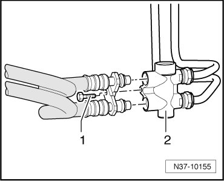
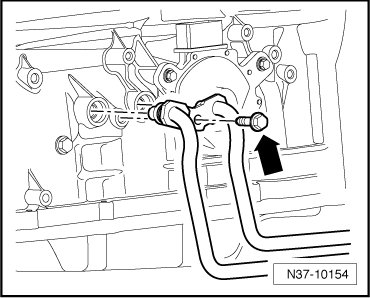

Procedures
ATF Cooler and Line, Cleaning
If the Automatic Transmission Fluid (ATF) is dirty or a replacement transmission is being installed, blow through the ATF cooler and lines with compressed air (max. 10 bar).
CAUTION!
Wear protective glasses.
- Thoroughly clean area surrounding connections at ATF line/transmission, ATF line/thermostat and ATF line/cooler.
- Remove bolt - 1 - from the ATF cooler thermostat - 2 -.

- Remove the ATF lines from the ATF cooler thermostat - 2 -. For this, counter hold at thermostat.
- Remove and empty ATF cooler. Refer to --> [ ATF Cooler and Lines ] ATF Cooler and Lines.
- Remove bolt - arrow - from the transmission.

- Remove the ATF lines from the transmission.
- Place a hose on an ATF line for transmission/thermostat and secure it with a hose clamp. Place the other end of the hose into an appropriate container.
- Blow through ATF line with compressed air.
- Change hose over to other ATF line and repeat the sequence.
- Lubricate O-rings with ATF.
- Install the ATF cooler and lines. Refer to --> [ ATF Cooler and Lines ] ATF Cooler and Lines.